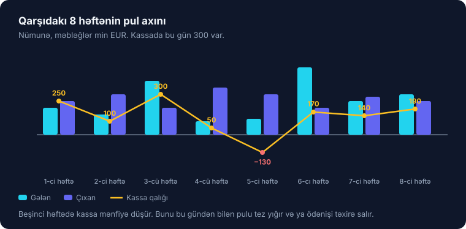
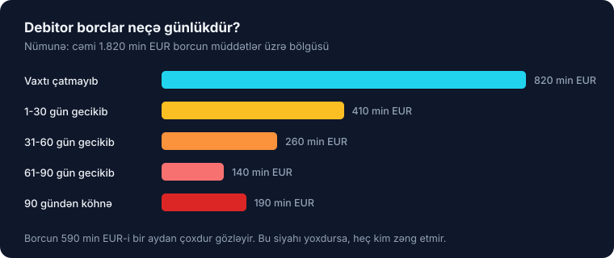

Maliyyə və idarəetmə uçotu üçün proqram niyə vacibdir?
Bir çox şirkət sahibi "mühasibatımız var" deyəndə kənar mühasibini nəzərdə tutur. Mühasib fakturaları işləyir, bəyannamələri verir, rəsmi uçotu aparır. Amma "bu həftə kimə nə ödəyəcəyik, kimdən nə alacağıq, ayın sonuna çatdıra biləcəyikmi" suallarının cavabı onda deyil. Bu suallar şirkətin öz içində, çox vaxt sahibkarın başında və bir Excel faylında cavab gözləyir.

İki ayrı mühasibat var
Birincisi dövlət qarşısında aparılan rəsmi mühasibatdır. Keçmişə baxır, qaydaları bəllidir, onu mühasib aparır. İkincisi şirkətin özünü idarə etmək üçün apardığı qeydlərdir. Buna idarəetmə uçotu və ya maliyyə uçotu deyirlər. Bu günə və qarşıdakı həftələrə baxır.
Birincisi üçün hər kəs bu və ya digər şəkildə qayda qurub, çünki məcburidir. İkincisi əksər şirkətlərdə dağınıqdır. Müştəri və təchizatçı hesabları bir Excel-də, çeklər bir bloknotda, bank əməliyyatları internet bankçılıqda, kredit ödənişləri isə başqa bir fayldadır. Hamısını bir yerdə görən tək yer sahibkarın yaddaşıdır.
Kassada pul var, bəs üç həftə sonra?
Əksər şirkətlərdə maliyyə nəzarəti dedikdə səhər bank hesabına baxmaq nəzərdə tutulur. Qalıqda pul varsa, işlər qaydasında sayılır. Qalıq bu günü göstərir. Gələn həftə vaxtı çatacaq çeki, ayın ortasındakı maaşları, ƏDV ödənişini və müştərinin gecikən ödənişini göstərmir.

Mənfəətlə işləyən şirkətlərin də pul çatışmazlığına düşməsinin səbəbi budur. Satış olub, faktura yazılıb, kağız üzərində pul qazanılıb. Amma müştəri altmış gün sonra ödəyəcək, təchizatçıya isə otuz gün sonra ödəmək lazımdırsa, aradakı boşluğu haradansa bağlamaq lazımdır. Bunu beş həftə əvvəldən görən şirkət bankla sakit danışıq aparır. Son gün görən isə tapa bildiyi ən bahalı krediti götürür.
Yığılmayan debitor borc
Görüşdüyümüz şirkətlərdə ən çox rast gəldiyimiz hal belədir: kimin nə qədər borclu olduğu bilinir, amma nə vaxtdan borclu olduğu bilinmir. Siyahıda iyirmi müştəri və yanlarında məbləğlər yazılıb. Hansının ödəniş vaxtı keçib, hansı üç aydır ödəmir, siyahıdan anlaşılmır.

Vaxtı keçmiş borc üçün zəng edilməyəndə müştəri də tələsmir. Pulu ilk istəyənə ödəyir. Borcların neçə günlük olduğunu göstərən sadə siyahı və həftədə bir dəfə müntəzəm edilən zənglər pulun yığılma müddətini nəzərəçarpacaq dərəcədə qısaldır.
Oxşar itki faktura yazılanda baş verir. İş təhvil verilib, amma fakturanı yazmaq üçün kimsə qaimələri toplamalıdır, bu da ayın sonuna qalır. Faktura gec yazıldığı üçün ödəniş müddəti gec başlayır, pul gec gəlir.
Maliyyə proqramı nəyi bir araya gətirir?
Yuxarıdakı hissələri bir qeyddə toplayır. Satış fakturası yazılanda müştərinin hesabına və ödəniş təqviminə özü işlənir. Alış fakturası daxil ediləndə ödəniş siyahısına əlavə olunur. Çeklər, veksellər, kredit ödənişləri və maaşlar da eyni təqvimdə dayanır.
Bu qeydlər bir yerdə olanda qarşıdakı həftələrin pul axını cədvəli özü çıxır. Heç kimdən "bu ay nə ödəyəcəyik" deyə soruşmağa ehtiyac qalmır.
Fakturalama satışa bağlanır. Təhvil verilən sifariş bir düymə ilə fakturaya çevrilir və elektron faktura kimi göndərilir. "İş bitib, amma fakturası yazılmayıb" halı ekranda ayrıca siyahı kimi görünür.
Bank əməliyyatları sistemə köçürülür və qeydlərlə tutuşdurulur. Hansı ödənişin hansı fakturaya aid olduğu, uyğunluğu tapılmayan əməliyyatların nə olduğu görünür.
Xərclər də qruplaşdırılır. Hansı şöbə, hansı layihə, hansı avtomobil nə qədər xərcləyir, ayın sonunda bir neçə kliklə çıxır. Bundan sonrası layihənin gəlirliliyini ölçmək mövzusuna bağlanır.
Mühasiblə iş necə bölünür?
Şirkət daxilində düzgün aparılan uçot mühasibin də işini asanlaşdırır. Ayın sonunda bir torba faktura göndərmək əvəzinə qruplaşdırılmış və tutuşdurulmuş qeydləri ötürürsünüz. Ondan gələn cədvəli öz qeydlərinizlə müqayisə edə bilirsiniz.
Əksər şirkətlərdə mühasibin işlətdiyi proqramı dəyişməyə ehtiyac olmur. Şirkət daxilindəki sistem məlumatı onun proqramına uyğun formatda çıxarır. Rəsmi mühasibatı tamamilə içəri almaq istəyən şirkətlər də var, amma bu ayrı qərardır və ilk addım olması vacib deyil.
Nə vaxt lazım olur?
- Ayda yazılan və gələn fakturaların sayı yüzü keçibsə.
- Möhlətlə satır və möhlətlə alırsınızsa.
- Çek, veksel və ya kredit ödənişlərinin təqvimi tək bir adamın bloknotundadırsa.
- Kimin neçə gündür borclu olduğunu öyrənmək yarım saatınızı alırsa.
- Gələn ayın pul vəziyyətini rəqəmlə deyə bilmirsinizsə.
Haradan başlamalı?
Ən tez nəticə verən iki mövzu müştəri və təchizatçı hesabları ilə ödəniş müddətlərinin izlənməsidir. Müştəri və təchizatçı qalıqlarını, açıq fakturaları və onların ödəniş müddətlərini sistemə daxil edin. Təkcə bu qədəri debitor borclar siyahısını və qarşıdakı həftələrin ödənişlərini görməyə imkan verir.
İkinci addım fakturalamanı satışa bağlamaq, üçüncüsü bank əməliyyatlarının tutuşdurulmasıdır. Xərclərin qruplaşdırılması və büdcə ən sona qala bilər.
Alətlərə gəlincə, yalnız sadə uçot aparan proqramlar, satış və anbarla birlikdə işləyən ERP sistemləri və bunların arasında dayanan həllər var. Satış, anbar və satınalma başqa sistemdə aparılırsa, maliyyə onlarla əlaqəli işləməlidir. Əks halda hər faktura iki dəfə daxil edilir. Biz seçim edərkən əvvəlcə bu əlaqəyə baxırıq.
Tez-tez verilən suallar
Mühasibimiz varkən buna ayrıca ehtiyac varmı?
Bunlar fərqli işlərdir. Mühasib keçmiş dövrün rəsmi uçotunu aparır. Maliyyə uçotu isə bugünkü debitor və kreditor borcları, pul vəziyyətini göstərir və şirkətin gündəlik qərarları üçün lazımdır.
Sadə uçot proqramımız var, kifayət deyilmi?
Müştəri hesabları və fakturaların izlənməsi üçün kifayət edə bilər. Əskik qaldığı yer adətən satış, anbar və layihələrlə əlaqədir. Eyni məlumatı iki sistemə daxil edirsinizsə və ya pul axını cədvəlini hələ də Excel-də hazırlayırsınızsa, növbəti pilləyə baxmağın vaxtı çatıb.
Köhnə qeydləri köçürmək lazımdırmı?
Hamısını yox. Açıq fakturalar, müştəri və təchizatçıların cari qalıqları, ödəniş vaxtı çatmamış çek və veksellər kifayətdir. Bağlanmış köhnə qeydlər köhnə yerində qala bilər.
Əlaqəli xidmətlərimiz: kiçik və orta biznes üçün ERP həlləri, rəqəmsal transformasiya məsləhəti.
Fayllarla uçot sizə ildə neçəyə başa gəlir?
Təkrar daxiletmənin, əl ilə hazırlanan hesabatların və fayl səhvlərinin illik xərcini hesablayın.
Kalkulyatoru açPul axını cədvəlinizi birlikdə quraq
Qarşıdakı səkkiz həftənin daxilolma və ödənişlərinə birlikdə baxaq.
Layihənizi müzakirə edək